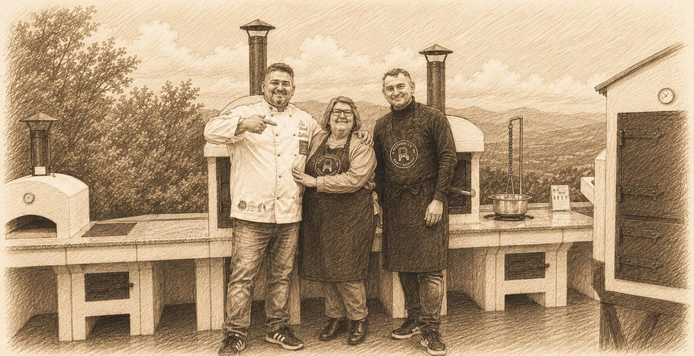

Kerti kemencék
Saját gyártású, fatüzelésű sütőkemencék — a kicsitől a nagy, egész családot ellátó modellekig.
Fatüzelésű kemence · Pécs
Emlékszel a nagyi udvari kemencéjéből áradó, frissen sült kenyér illatára? Az ország legnagyobb kemencekészítőjeként nemcsak gyártjuk a kerti sütőkemencéket, meg is tanítunk sütni bennük. A vadkovásztól a nápolyi pizzáig, kis csoportban, olyan profiktól, akik szívből adják tovább a tudást.
Ha szeretsz a szabadban sütni-főzni, nálunk a helyed. Kis létszámú workshopjainkon, maximális figyelem mellett lesheted el a mesterfogásokat profi kemencehasználóktól, kézzelfoghatóan, szívvel.
Az élmény
Kis, családias csoportban (4–5 fő) töltünk együtt egy egész napot, nyugodt tempóban, sok gyakorlással és még több nevetéssel.
Beszélgetünk az alapanyagokról, a formákról és a töltelékekről, majd dagasztunk, hajtogatunk, nyújtunk, formázunk. Ne ijedj meg tőle, élvezni fogod!
Megismered a fatüzelésű kemencét: a sütési időt, a hőmérsékletet, a kemencés technikákat és a sütési lehetőségeket.
Kemencében sütjük meg, amit készítettünk, és együtt is fogyasztjuk el. Kávé, tea, frissítők a nap teljes időtartama alatt.
Viszed a kötényt, amiben dolgoztál, a receptet, és amit sütöttél, meg egy szép nap emlékét.
Rólunk
Nálunk nem nemzetközi minősítéssel rendelkező mesterek tanítanak, hanem olyan emberek, akik évek alatt megtanulták a kemence használatát, és tökélyre fejlesztették a saját különlegességeiket. Közvetlen, barátságos, kézzelfogható tudás.
A Kemencés Facebook-csoportunkban a tagok lelkesen segítik az újakat, inspiráló történeteikből és tapasztalataikból látszik, hogy a jó házi sütés bárkinek sikerülhet.

Foglalás
Élő adat, a szabad helyek valós időben frissülnek. A „Foglalás" gombbal jelentkezhetsz.
Programok betöltése…
Egyedi programok
Leánybúcsú, szülinap, csapatépítő, óvodás- vagy családi program — mondd el, mit szeretnél, és személyre szabott ajánlatot küldünk.
Betöltés…
Kandalló-Futár webshop
A workshop után otthon se érjen véget a sütés. Az ország legnagyobb kemencekészítőjeként a Kandalló-Futár webshopban mindent beszerzel, ami a kerti tűzhöz kell — hogy a vasárnapi pizza és a frissen sült kenyér nálad is a kertből érkezzen.
Saját gyártású, fatüzelésű sütőkemencék — a kicsitől a nagy, egész családot ellátó modellekig.
Grillsütők és kerti tűzhelyek a szabadtéri sütéshez-főzéshez.
Füstölőszekrények és minden kellék, amivel otthon füstölhetsz.
Teljes megoldások, hogy a kert legyen a kedvenc konyhád.
Pizzalapát, samottkő, kerámia edények, köcsögök, hőálló kesztyű — a jó sütéshez.
Kenyér, pizza, sültek, egytálételek — inspiráló recepttár a saját kemencédhez.
Akár Cofidis áruhitelre is: a nagyobb kemence is kényelmes, havi részletekben lehet a tiéd.
Foglalás
A foglalás jóváhagyásra vár, hamarosan felvesszük veled a kapcsolatot az utalás egyeztetéséhez. Egy visszaigazoló e-mailt is küldtünk.
Egyedi ajánlatkérés
Hamarosan személyre szabott ajánlattal keresünk meg e-mailben. Egy visszaigazolót is küldtünk.